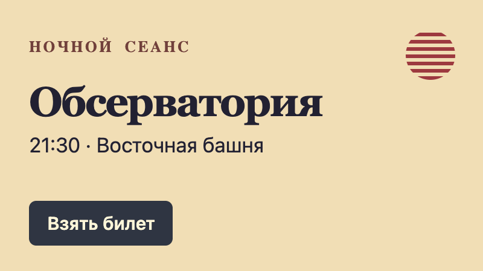

<!doctype html>
<html lang="ru">
<meta charset="utf-8">
<meta name="viewport" content="width=device-width,initial-scale=1">
<title>Какая карточка «живая»?</title>
<script defer src="../assets/cursors/idle.js"></script>
<link rel="stylesheet" href="shared.css">
<style>
main{display:grid;align-content:center;min-height:100svh;padding:28px 34px 46px}
h1{margin-bottom:8px}
.pair{display:grid;grid-template-columns:repeat(2,minmax(0,1fr));gap:24px;margin-top:12px}
.pair figure{margin:0;min-width:0}
.pair figcaption{margin-bottom:6px}
.slot{width:100%;aspect-ratio:400/224;position:relative;overflow:hidden;border-radius:8px}
.slot iframe,.slot img{display:block;border:0;width:400px;height:224px;transform-origin:0 0;transform:scale(var(--scale,1))}
@media(min-width: 760px) and (min-height: 510px){main{padding-bottom:170px}}
@media(max-width:560px){.pair{grid-template-columns:minmax(0,400px);gap:10px}}
</style>
<main>
  <h1>Какая карточка «живая»?</h1>
  <div class="pair">
    <figure><figcaption class="label">А</figcaption><div class="slot"></div></figure>
    <figure><figcaption class="label">Б</figcaption><div class="slot"><iframe title="Билет в обсерваторию, интерактивный пример" src="card.html" width="400" height="224"></iframe></div></figure>
  </div>
</main>
<script>
  for (const slot of document.querySelectorAll('.slot')) {
    new ResizeObserver(() => slot.style.setProperty('--scale', slot.clientWidth / 400)).observe(slot);
  }
</script>
</html>
